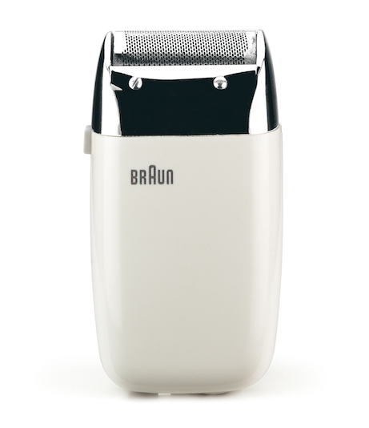
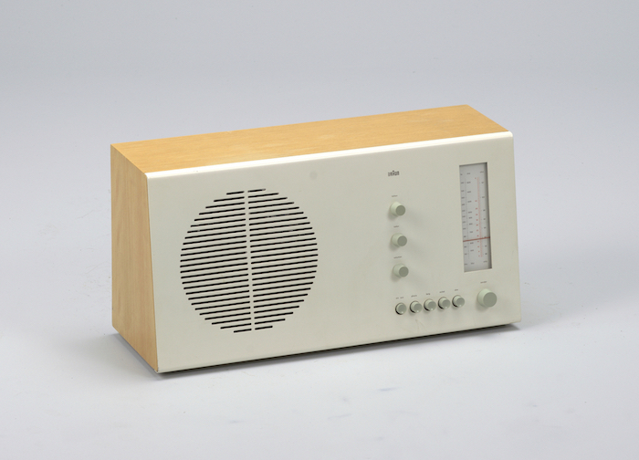
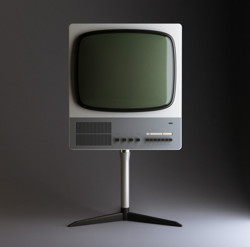
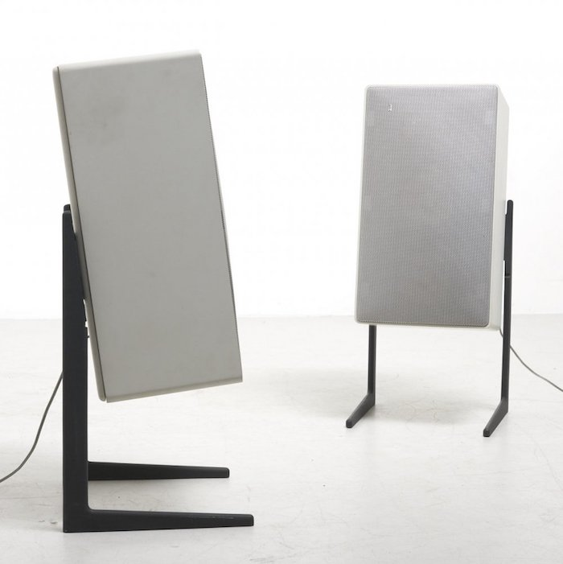

디터 람스(Dieter Rams)
(1932년 ~ )
- 브라운 회사의 수석 디자이너.
- 우리가 쓰는 가전제품의 디자인을 혁신시킴.
.
.

면도기, 1973.
.

탁상 라디오, 1961.
.

텔레비전, 1964.
.

스피커, 1972.
.
디터 람스의 좋은 디자인 10계명
.
Good design is innovative. (좋은 디자인은 혁신적이다.)
Good design makes a product useful. (좋은 디자인은 제품을 유용하게 한다.)
Good design is aesthetic. (좋은 디자인은 아름답다.)
Good design makes a product understandable. (좋은 디자인은 제품을 이해하기 쉽도록 한다.)
Good design is honest. (좋은 디자인은 정직하다.)
Good design is unobtrusive. (좋은 디자인은 불필요한 관심을 끌지 않는다.)
Good design is long-lasting. (좋은 디자인은 오래 지속된다.)
Good design is thorough down to the last detail. (좋은 디자인은 마지막 디테일까지 철저하다.)
Good design is as little design as possible. (좋은 디자인은 할 수 있는 한 최소한으로 디자인한다.)
.